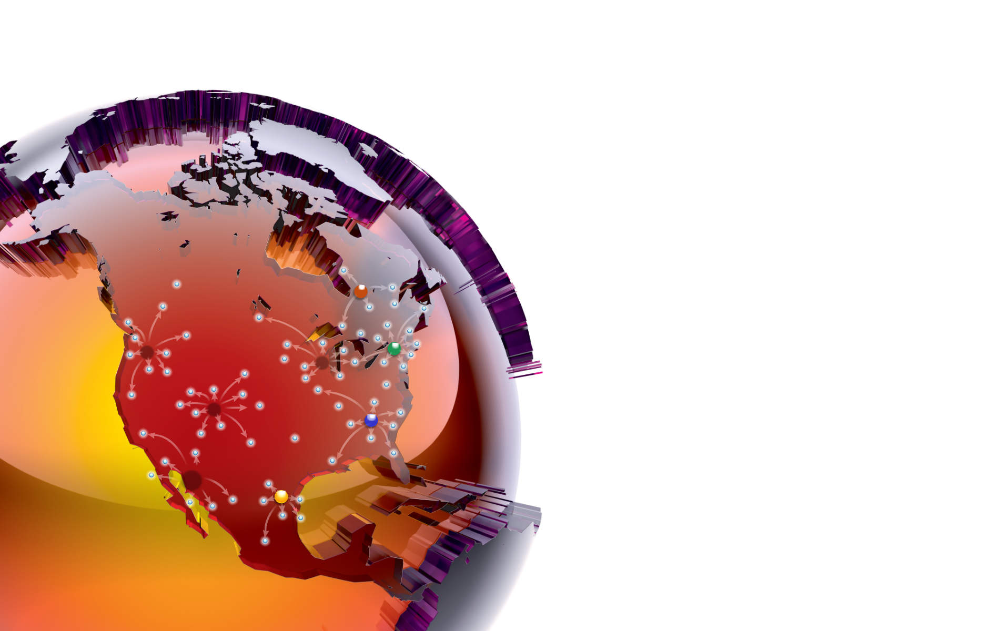

<!DOCTYPE html>
<html>
  <head>
    <meta charset="utf-8">
    <title>Keith Swiednicki</title>
    <meta name="viewport" content="width=device-width, user-scalable=no, initial-scale=1">
    <link rel="stylesheet" type="text/css" href="css/styles.css">
    <link rel="stylesheet" type="text/css" href="css/font-awesome.min.css">
  </head>
</html>
<body>
  <div class="total">
    <div class="wrapper main"><map id="Map" name="map">
        <area id="orangeclick" alt="" title="" href="#" shape="poly" coords="346,888,348,928,387,930,386,890" class="area">
        <area id="purpleclick" title="" href="#" shape="poly" coords="265,653,270,681,293,680,293,658" class="area">
        <area id="blueclick" href="#" shape="poly" coords="395,763,417,763,422,790,394,788" class="area">
        <area id="pinkclick" href="#" shape="poly" coords="599,674,602,702,630,702,627,672" class="area"></map>
      <div class="orangebox distribution">Distribution Network Optimization</div>
      <div class="orangebox trans">Transportation Optimization</div>
      <div class="orangebox ins">INSOURCING VS. OUTSOURCING</div>
      <div class="orangebox eval">3PL EVALUATION & SELECTION</div>
      <ul class="menu"><a href="index.html">
          <li class="blue">Home</li></a><a href="wedo.html">
          <li class="purple">What we do</li></a><a href="weare.html">
          <li class="yellow">Who we are</li></a><a href="contact.html">
          <li class="green">Contact</li></a></ul>
    </div>
    <div id="dist" class="sidetext orangeside">
      <h2>Distribution network optimization</h2>
      <h3>Optimization for supply chain networks</h3>
      <p>
        OUR BOTTOM-UP APPROACH ENSURES THAT ALL OF
        OUR RECOMMENDATIONS ARE PRACTICAL AND CAN BE
        SUCCESSFULLY IMPLEMENTED TRACING ALL ASPECTS
        OF THE NETWORK TO DETAILED DATA.<br><br>OUR GOAL IS TO ANSWER COMPLEX QUESTIONS SUCH
        AS:<br><br>• HOW CAN I BEST SERVE MY EXISTING AND FUTURE
        MARKETS?<br><br>• HOW MANY DISTRIBUTION CENTERS SHOULD I HAVE?<br><br>•WHERE SHOULD THEY BE LOCATED?<br><br>• HOW BIG SHOULD THEY BE?<br><br>• WHAT ITEMS SHOULD BE STOCKED AT EACH DC?<br><br>• WHAT IS THE IMPACT OF CHANGING INVENTORY
        LEVELS?<br><br>• WHAT IS THE ROADMAP IN YEARS FOR ME TO ALLOCATE
        CAPITAL AND PLAN EXPANSIONS?<br><br>• HOW SHOULD EACH DC OPERATE INSIDE THE 4 WALLS<br><br>• SHOULD I USE AUTOMATION, MECHANIZATION,
        CONVENTIONAL SYSTEMS OR A HYBRID?<br><br>• HOW CAN I BEST REUSE EXISTING CAPACITY?
      </p>
      <div class="divline"></div>
      <h3>Want to learn more?</h3>
      <div class="actionbutton"> Click here</div>
    </div>
    <div id="transport" class="sidetext orangeside">
      <H2>Distribution network optimization</H2>
      <h3>TRANSPORTATION OPTIMIZATION</h3>
      <p>
         
        • PERFORM DETAILED ROUTING TO OPTIMIZE YOUR FLEET OR CARRIER<br><br>• Evaluating transportation budgets and operations to identify cost savings and service improvement opportunities
      </p>
      <div class="divline"></div>
      <h3>Want to learn more?</h3>
      <div class="actionbutton"> Click here</div>
    </div>
    <div id="insource" class="sidetext orangeside">
      <h2>Distribution network optimization</h2>
      <h3>INSOURCING VS. OUTSOURCING</h3>
      <p><br><br>• EVALUATING THE economics OF OUTSOURCING versus self-distribution of warehouse operations considering a third party service provider (3pl) or other distributors.<br><br>• EVALUATE CURRENT DISTRIBUTION OPERATIONS AND DETERMINE AN IMPROVED BENCHMARK TO COMPARE TO A 3PL PROVIDER. <br><br>• PERFORM FINANCIAL & OPERATIONAL DISTRIBUTION MODELLING</p>
      <div class="divline"></div>
      <h3>Want to learn more?</h3>
      <div class="actionbutton"> Click here</div>
    </div>
    <div id="evaluation" class="sidetext orangeside">
      <h2>Distribution network optimization</h2>
      <h3>3PL EVALUATION & SELECTION</h3>
      <p>
         
        • DEVELOP A 3PL OUTSOURCING REQUEST FOR PROPOSAL THAT IS SPECIFIC TO YOUR BUSINESS NEEDS.<br><br>• PERFORM DETAILED ROUTING TO OPTIMIZE YOUR FLEET OR CARRIER
      </p>
      <div class="divline"></div>
      <h3>Want to learn more?</h3>
      <div class="actionbutton"> Click here</div>
    </div>
    <div class="divider"></div>
    <div class="wrapper usual-footer">
      <div class="purpletag">Supply chain solutions</div>
    </div>
  </div>
  <script src="js/jquery.min.js"></script>
  <script src="js/jquery.rwdImageMaps.min.js"></script>
  <script>$(document).ready(function(e) {$('img[usemap]').rwdImageMaps();});</script>
  <script src="js/sideanimations.js"></script>
</body>